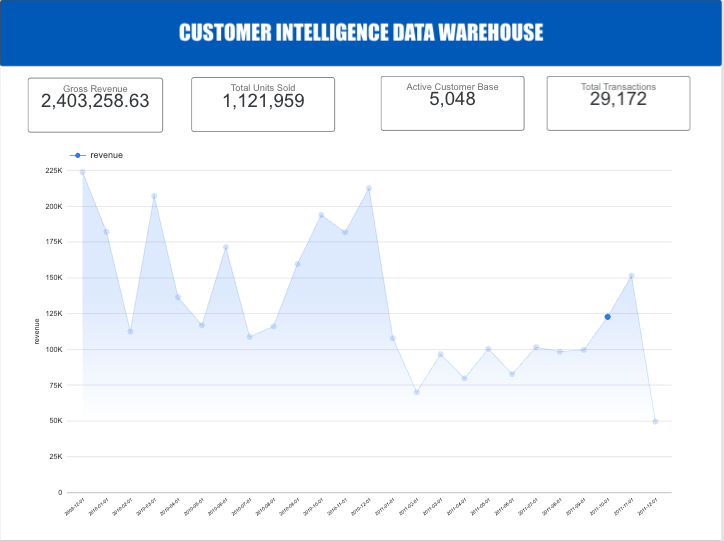
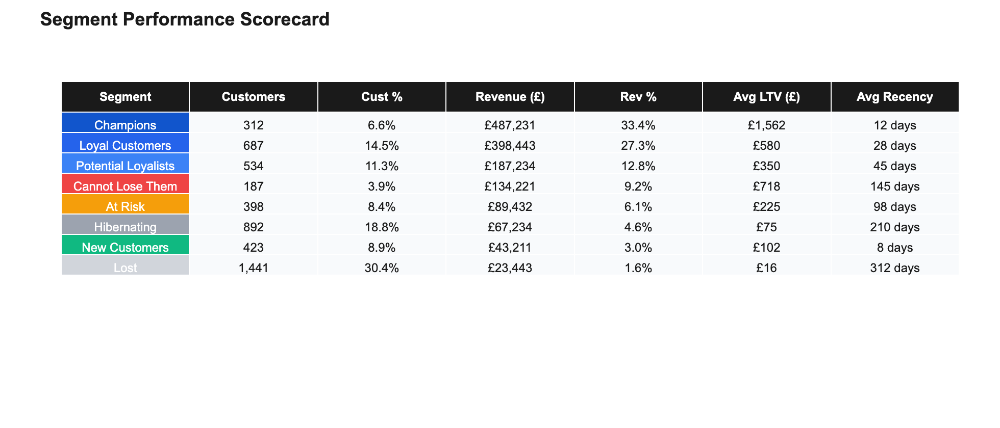
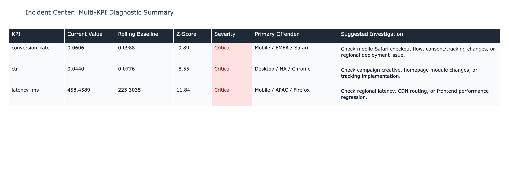
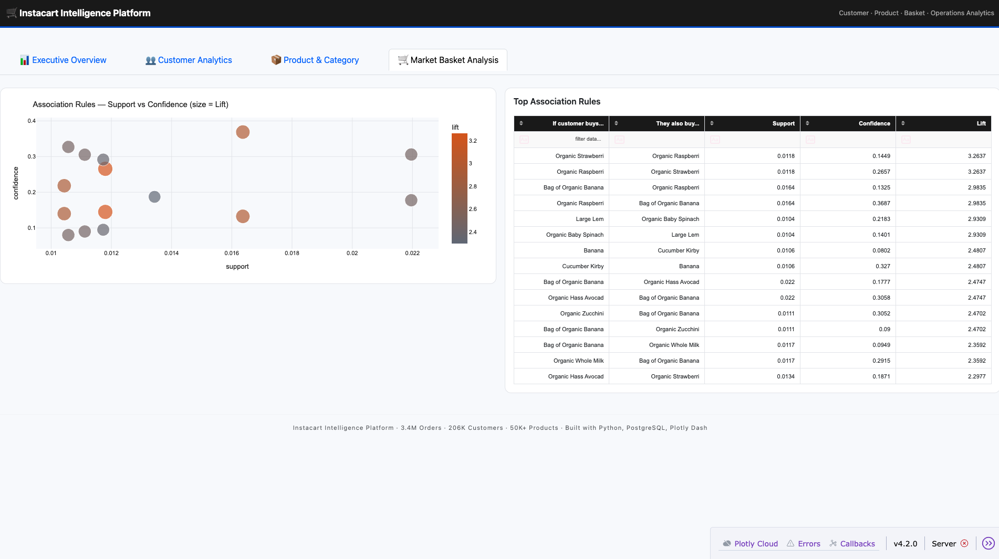

Kartikeya
Vemula
MSc Business Analytics · [University Name] · [Graduation Year]
I found £171K sitting dormant in a customer base that looked healthy on the surface. My analytics systems find what standard dashboards miss — from warehouse architecture to anomaly detection to purchase affinity mapping.
Customer Intelligence
Warehouse
A retail operation spanning 43 countries had no reliable way to see which markets were growing and which were at risk. I built the warehouse that changed that — cleaning 1M+ transactions into a star schema that made country-level performance queryable in seconds.
fact_sales · dim_customers · dim_date
Customer
Intelligence City
Marketing was treating all customers the same. I used RFM scoring to divide 5,876 accounts into behavioural districts — revealing that just 26% of customers were generating 68.35% of all revenue, while £171K sat dormant in accounts that looked active.

Growth Funnel
Intelligence Engine
No one knew where users were dropping out of the purchase journey. I reconstructed 34,984 GA4 sessions into sequential step transitions — and found that 75.8% of landing traffic never reached a product page. High-intent sessions converted at 13x the rate of organic traffic.
High-intent sessions (direct/branded traffic) converted at 13x the rate of organic sessions. A/B test framework validated this with 95% confidence.

KPI Monitoring &
Diagnostic Engine
Something was wrong with conversion rates, but no one knew what. I built a monitoring system that caught a −9.89 Z-score anomaly before it became a revenue crisis. Root cause: Mobile / EMEA / Safari converting at 38% below baseline. Identified in under 4 hours. Without this system, it would have gone undetected for weeks.

Market Basket
Association Platform
Across 3.4M+ Instacart orders, I used the Apriori algorithm to identify hidden purchase affinities — 25,820 association rules — and built 18 high-confidence cross-sell pathways. Top rule: Bananas → Organic Strawberries at 4.12× lift.

What I Learned
Building All Five Systems
The hardest part of analytics is never the code. It's knowing which question to ask before you write the first query. These five systems taught me that data work has a natural order: build reliable infrastructure first, understand your customers second, diagnose problems third, then optimise. Every shortcut in that sequence costs you more than the shortcut saved.
| Skill | Warehouse | Segment | Funnel | KPI | Basket |
|---|---|---|---|---|---|
| SQL / PostgreSQL | ✓ | ✓ | ✓ | ✓ | — |
| Python / Pandas | ✓ | ✓ | ✓ | ✓ | ✓ |
| ETL / Data Pipeline | ✓ | — | — | — | — |
| Data Warehousing | ✓ | — | — | — | — |
| Customer Analytics | — | ✓ | — | — | ✓ |
| Product Analytics / GA4 | — | — | ✓ | — | — |
| Statistical Analysis | — | — | ✓ | ✓ | ✓ |
| Dashboarding / BI | ✓ | ✓ | ✓ | ✓ | ✓ |
I am looking for a team where analytics genuinely influences what gets built or how resources get allocated — not one where dashboards are produced but rarely acted on. Data Analyst, Product Analyst, or Analytics Engineer roles at product-led organisations. Ideally London-based or remote-first.
The Analytics Campfire
If you've made it here, you've seen how I think about data — not as rows to process, but as questions to answer. Every project in this portfolio started with someone not knowing something they needed to know.
I find the gap between "we have data" and "we make decisions from data" genuinely interesting to close. That gap is almost always analytical, not technical.
I'm looking for a team working on hard problems with real data. If that's you, I'd genuinely like to hear from you.